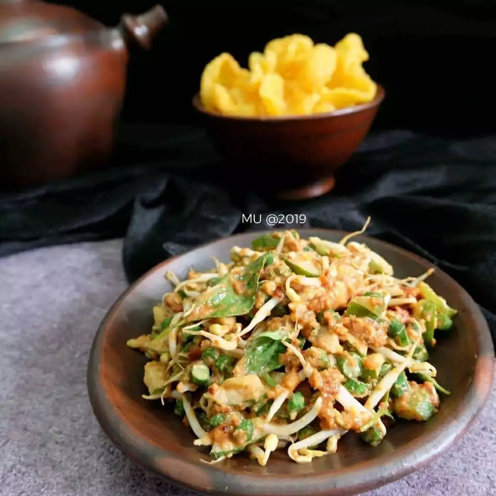

Karedok

Campuran sayur-sayuran yang dibuat bersama bumbu kacang
Karedok adalah salah satu makanan khas Sunda di Indonesia.
Karedok dibuat dengan bahan-bahan sayuran mentah antara lain; mentimun, taoge, kol, kacang panjang, ubi, daun
kemangi, dan terong atau leunca.
Bahan-bahan
- 5 buah kacang panjang, iris tipis
- 1 buah timun, iris kecil-kecil
- 3 lembar kol, iris tipis
- 1/2 ons tauge
- 2 buah terong bulat, iris kecil-kecil
- 1/2 ikat kemangi
- 1 ons kacang tanah sangrai
- 1 buah cabai merah
- 2 buah cabai rawit
- Sedikit terasi
- 2 ruas kencur
- 1/2 siung bawang putih
- garam dan gula merah
- 1 sdt air asam jawa (optional)
Cara membuat
- cabeai terasi, kencur, bawang putih, garam dan gula merah
- Lalu tambahkan kacang tanah dan air asam jawa, haluskan dan beri sedikit air jika perlu.
- Masukkan semua sayur, aduk hingga rata.
- Sajikan dengan kerupuk.
Return to Mainpage